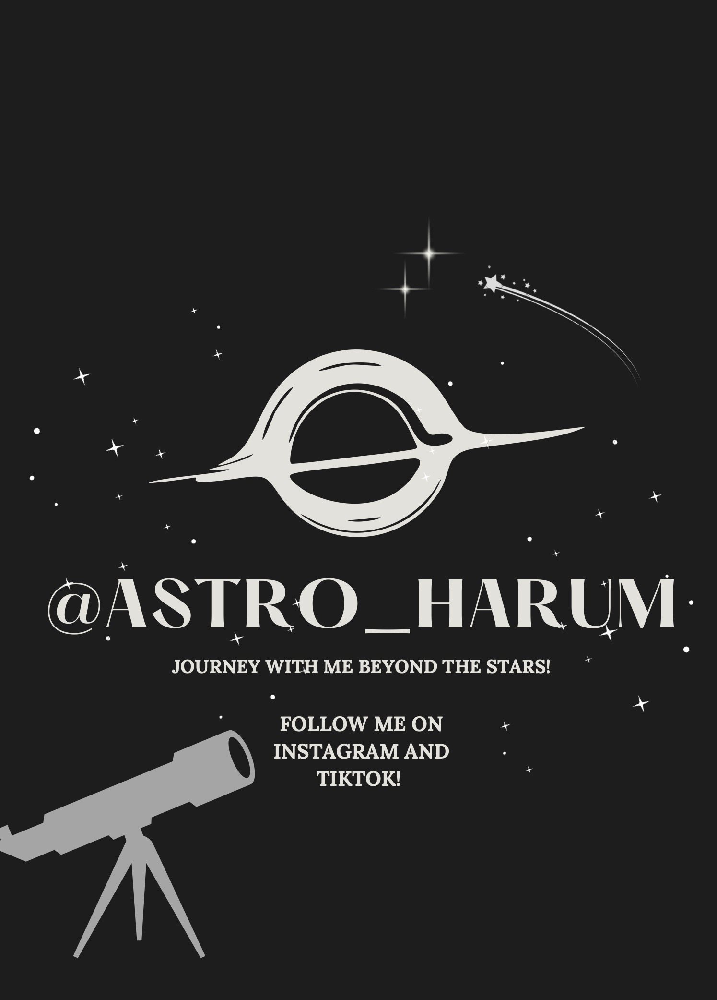
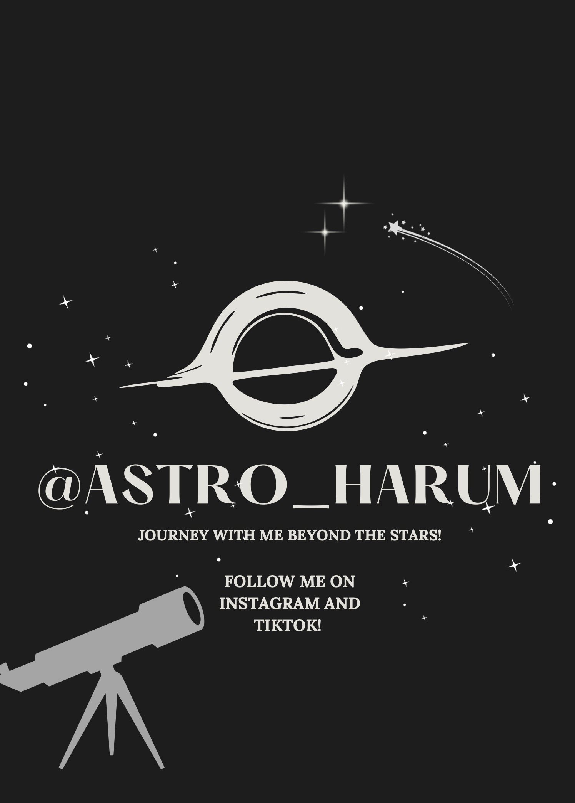

Teaching & Outreach
"The universe is under no obligation to make sense to you." - Neil deGrasse Tyson

T E A C H I N G
As a Teaching Assistant for Introductory Astronomy Labs at the University of North Texas, I lead weekly in-person sessions for over 300 students, guiding them through hands-on activities in the Planetarium, Experimental, and Observatory labs. My role involves not only delivering engaging instruction that brings astronomical concepts to life, but also evaluating lab reports and supporting student learning.
 

O U T R E A C H
Astronomy Outreach Volunteer
I actively participate in public star parties and educational events, helping spark curiosity about the universe. I guide attendees through telescope observations, answer astronomy-related questions, and assist with hands-on demonstrations.
Social Media Content Creator (@astro_harum)
I design and share accessible astronomy content focused on recent discoveries, astrophysical research, and educational insights. I use tools like Canva, Adobe Express, and Figma to create visually engaging explainers and infographics that break down complex concepts for general audiences. My goal is to make space science exciting and approachable for everyone!